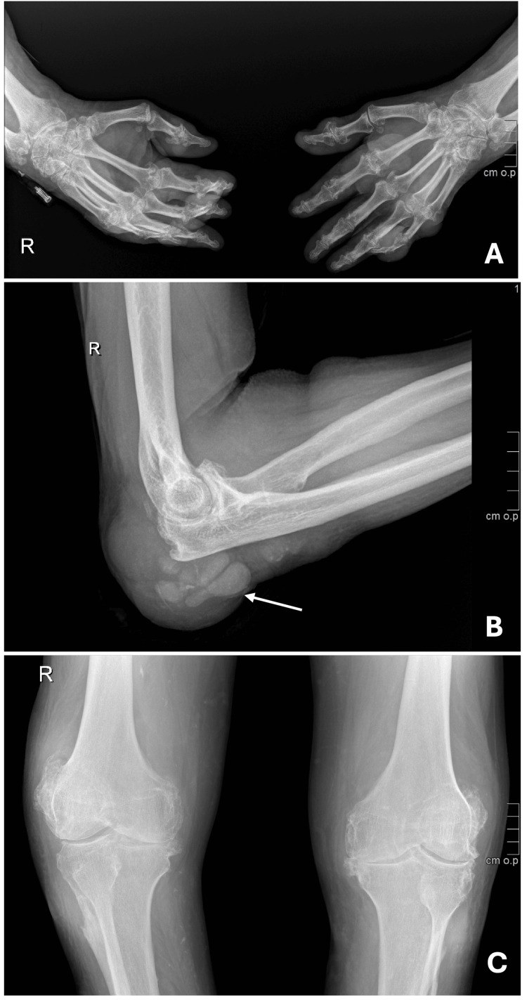

340 — Khớp: OA vs RA vs PsA vs Gout / Arthritis
Tags: pattern:hep-khe-khop pattern:mon-xuong vung:khop
Mức chắc chắn (certainty): tổng hợp y văn (literature synthesis) — nhóm tự biên từ y văn mở, chưa gắn ca nguyên văn đơn lẻ.
1. Tổng quan — sụn mòn kiểu gì + xương đáp ứng kiểu gì
- Thoái hóa (OA): sụn mòn cơ học vùng chịu lực → xương đáp ứng bằng tạo xương (gai + đặc dưới sụn) — TẠI SAO hẹp KHÔNG ĐỀU + gai + đặc: tải lệch bào mòn một khoang, xương cứng hóa bù.
- Viêm dạng thấp (RA): màng hoạt dịch viêm ăn sụn đều + xương quanh khớp loãng — TẠI SAO hẹp ĐỀU + loãng cạnh khớp + mòn bờ mà KHÔNG gai: viêm toàn khớp, không có tạo xương (khác OA/PsA).
- Gout: tinh thể urat lắng + đại thực bào → mòn cạnh khớp + hạt tophi — TẠI SAO bờ treo (overhanging edge) + khe bảo tồn muộn: tophi ăn từ ngoài vào, sụn lâu mới hỏng; tophi 160–170 HU + xanh lá DECT.
2. Gamut đau-sưng khớp (Gamut)
- Hẹp không đều + gai + đặc + DIP Heberden: OA — giảm cân + NSAID + thay khớp khi nặng.
- Hẹp đều + loãng cạnh khớp + mòn bờ + MCP/PIP, chừa DIP: RA — DMARDs sớm (methotrexate + sinh học).
- Bút chì-nắp + cánh hải âu + ngón dồi + DIP: PsA — sinh học IL-17.
- Bờ treo + tophi 160 HU + giữ khe: Gout — hạ urat (< 360 µmol/L) + colchicine cơn cấp.
3. Bảng so sánh phân biệt (ma trận đối chiếu)
| Thực thể (entity) | Hình ảnh điển hình | Chốt vào (rule-in) | Chốt loại (rule-out) | Gợi ý xác nhận |
|---|---|---|---|---|
| OA | Hẹp không đều + gai + đặc + geodes + DIP | Gai + đặc + không đều | Hẹp đều + loãng → RA | Kellgren-Lawrence + thay khớp |
| RA | Hẹp đều + loãng cạnh khớp + mòn bờ + MCP/PIP, chừa DIP | Mòn bare area + đối xứng + không gai | Có gai → OA/PsA | Anti-CCP/RF + MRI sớm + DMARDs |
| PsA | Mòn trung tâm + tạo xương lông tơ + pencil-cup + gull-wing + DIP | Vừa mòn vừa tạo xương + ngón dồi | Hẹp đều không gai → RA | PASI + IL-17 |
| Gout | Bờ treo + tophi 160–170 HU + giữ khe + DECT xanh lá | Overhanging + tophi + urat cao | Hẹp đều + loãng → RA | Urat máu + DECT + hạ urat |

(A) bàn tay mòn + gai; (B) khuỷu đục lỗ + bờ treo + đặc phần mềm; (C) gối thoái hóa + mòn đầu trên xương mác. Nguồn: Ambrósio et al., Cureus 2026 Fig. 3, CC BY 4.0.4. Protocol
- X-quang thẳng-chếch 2 tay/chân + siêu âm (double contour) + DECT khi tinh thể; MRI sớm khi RA chưa mòn (viêm màng + phù tủy).
flowchart TD
A[Sưng đau khớp] --> B{Có gai + đặc?}
B -->|Có + không đều| C[OA]
B -->|Không + hẹp đều| D{Mòn bờ + loãng?}
D -->|Có| E[RA: anti-CCP + DMARDs]
D -->|Bờ treo + tophi| F[Gout: DECT + hạ urat]
5. Cạm bẫy
- Gout tay giả RA (ca trên!) — bờ treo + tophi + DECT phân biệt, đừng DMARDs mù.
- Urat máu bình thường trong cơn cấp (ca trên 4,6 mg/dL!) — cơn cấp đào thải urat, chẩn đoán bằng tinh thể/DECT.
- PsA DIP giả OA DIP — pencil-cup + ngón dồi + vảy nến da mới là PsA.
6. Tự lượng giá — Blind Quiz
Ca 1 — Nam 63 tuổi đa khớp biến dạng + chảy bột trắng khuỷu. Đọc X-quang.
- Hỏi: mòn kiểu gì? RA hay Gout? Urat máu bình thường loại được Gout không?
Bấm để hiện đáp án
- Dấu hiệu (findings): mòn đục lỗ (punched-out) + bờ xương treo (overhanging) + đặc phần mềm tophi + khe tương đối giữ.
- Chẩn đoán (diagnosis): gout tophi đa khớp mạn — urat máu bình thường trong cơn cấp KHÔNG loại trừ (chẩn đoán bằng tinh thể + DECT + bờ treo).
- Nguồn: Ambrósio et al., Fig. 3, CC BY 4.0.
Ca 2 — Hẹp đều MCP/PIP + loãng cạnh khớp + mòn bờ, chừa DIP: OA hay RA? Thuốc gì sớm? (Bảng mục 3.)
Bấm để hiện đáp án
- RA: anti-CCP/RF + DMARDs sớm (methotrexate) — khác OA có gai + đặc.
Ca 3 — Ngón dồi + pencil-cup DIP + vảy nến da: PsA hay OA? (Bảng mục 3.)
Bấm để hiện đáp án
- PsA: vừa mòn vừa tạo xương + DIP — sinh học IL-17 (OA DIP chỉ gai Heberden).
Bài liên quan chéo
- 300 – Tổng quan MSK
- [341 – Trục cột sống (dự kiến viết sau)]
- 360 – Khớp gối (OA khoang trong)
Không dùng để chẩn đoán độc lập khi chưa có người hướng dẫn.